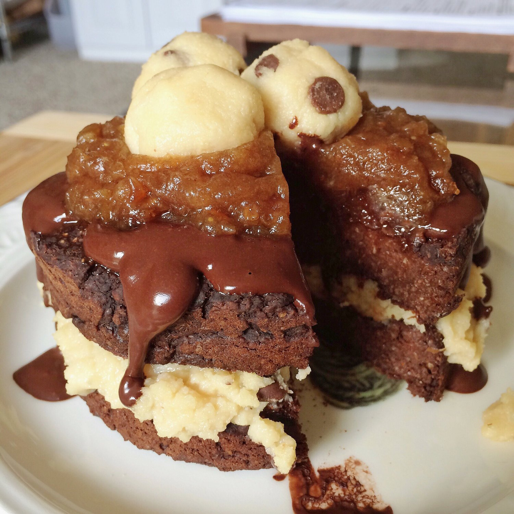

Chocolate Protein Cake (vegan)

Every now and again I like to pretend I'm @tumblinbumblincrumblincookie. It's a good life. I like to imagine my days filled with huge dollops of peanut butter, fancy never ending oatmeal bowls, and fruit galore. Today, I couldn't stop thinking about her magical cakes - so I made my own. Chocolate protein cake filled with my go-to cookie dough topped with a chocolate sauce (unsweetened cocoa, stevia, & water), a caramel sauce (1/4 cup juicy dates mashed with water - so simple and SO yum), and more cookie dough balls. This is incredible. Please make it. I documented the entire thing on snapchat XD because I was so amazed. Snapchat username: pbeechie1. Because somehow pbeechie got taken by someone ._. If you're the culprit, FESS UP! D;
Also note, I'm still slowly transitioning to veganism. Pretty proud this recipe is vegan and still so so yummy. Dairy - gone. Meat - long gone (Except sometimes I get fish sushi shhh). Eggs - gone. Now I'm just phasing out my products that have whey protein. I don't want to toss it out, but I have sooo much stufffffff. Protein powder, pancake mixes, protein bars, even a ton of my nut butters have it. Eventually..
Chocolate Protein Cake (vegan)
Serves: 4
-
3/4 cup oat flour (ground oats)
-
1 scoop rice protein (15g)
-
3 TBSP ground flax seeds
-
1/4 cup unsweetened cocoa powder
-
1/4 cup baking stevia
-
1/4 cup canned pumpkin
-
3/4 cup unsweetened almond milk
-
1 tsp baking powder
-
1/2 tsp almond extract (or vanilla but almond is yum)
In a bowl, toss in all the ingredients!! Mix until even. Pour in a baking dish sprayed with nonstick spray - I used two mini springform pans. Bake at 350 F for 16-17 minutes. Cut into 4 pieces. Eaaattttt.
1 slice before toppings: 114 cals; 4 g fat, 17 g carbs (6 g fiber), 7 g protein
